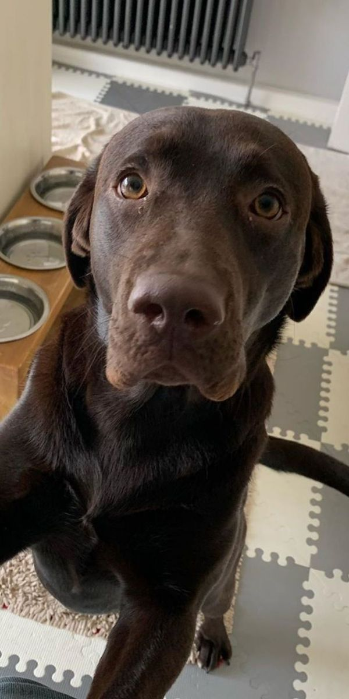
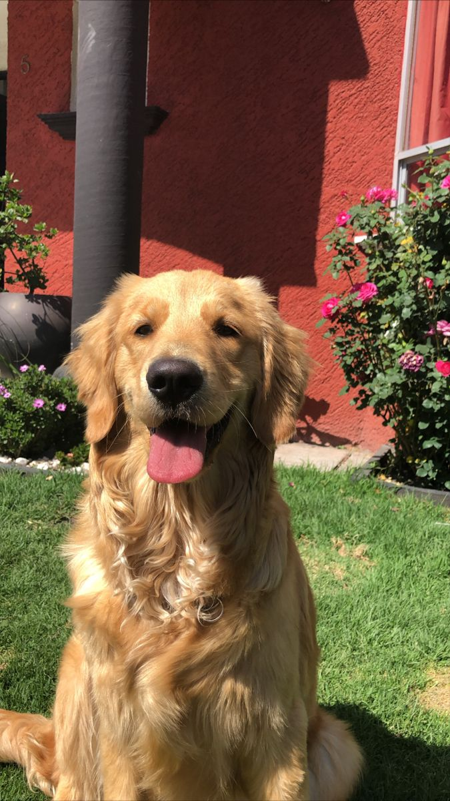
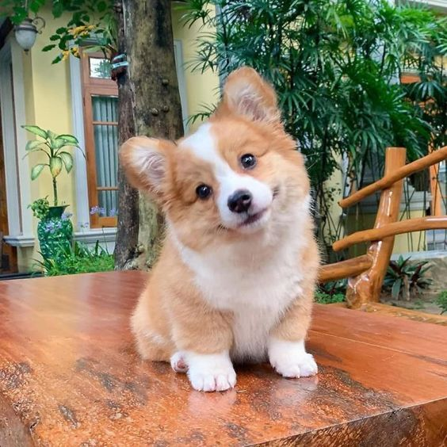
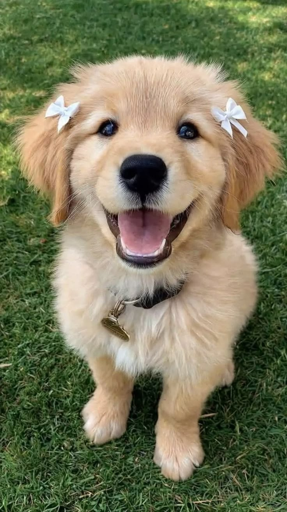
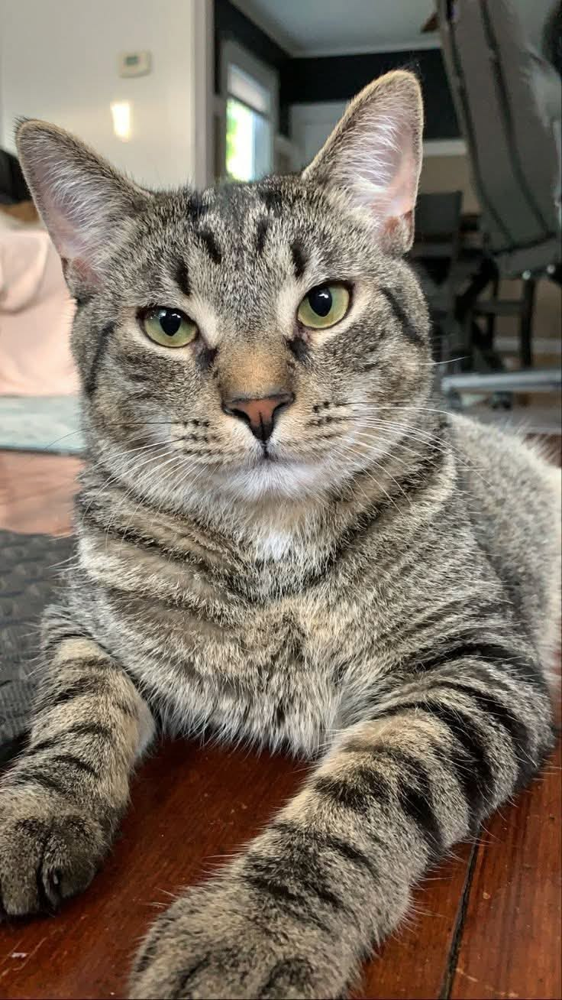

Max
Juguetón y lleno de energía. Le encanta correr por el jardín.

Juguetón y lleno de energía. Le encanta correr por el jardín.

Tranquila y elegante. Siempre busca un lugar cómodo para dormir.
Fuerte y protector. Cuida a toda la familia con mucho cariño.

Curioso y aventurero. Siempre explorando cada rincón de la casa.

Cariñosa y leal. Le encanta estar cerca de las personas.

Dormilón y glotón. Su lugar favorito es al lado del plato de comida.